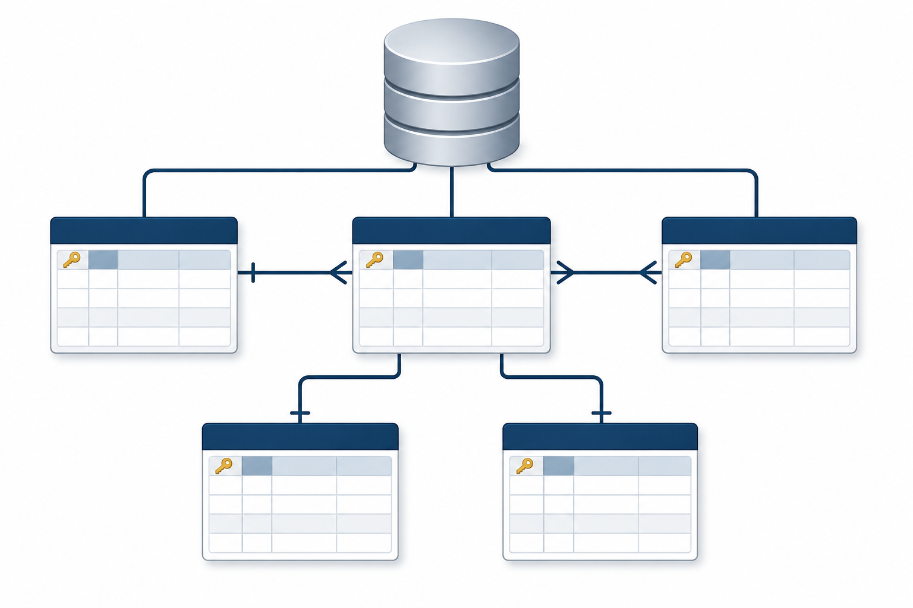
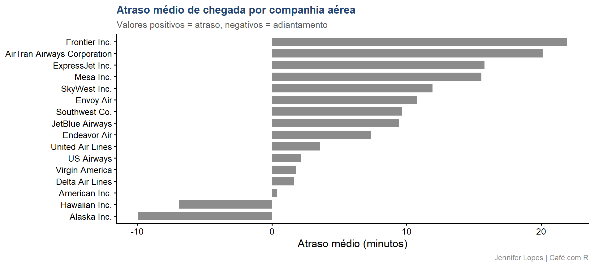

Aula 30. Banco de Dados no R
DBI, dbplyr e SQLite do zero ao mercado
Democratização
Esta aula foi construída para que você entenda como conectar o R a bancos de dados relacionais, consultar dados sem carregá-los na memória e gerar SQL automaticamente a partir do código dplyr que você já conhece.

Essa é a Meguy, mascote do café com R.
Acompanhe o Café com R
SITE OFICIAL> https://jenniferlopes.github.io/meu_site/
Aulas do Café com R para apoio
Aula 5. Do SQL para o R com dbplyr - Link
Aula 5.1. SQL x R (dbplyr) - cheat sheet com as funções - Link
Aula 14. R e RStudio | 14 integrações que você precisa conhecer - Link
Objetivos da aula
- Compreender o que é um banco de dados relacional e quando usar
- Entender a diferença entre OLTP e OLAP
- Dominar o pacote DBI: a interface unificada do R para qualquer banco
- Usar o pacote dbplyr para gerar SQL a partir do dplyr
- Criar e operar um banco SQLite localmente
- Conectar ao PostgreSQL com autenticação segura
- Aplicar boas práticas de segurança e organização de conexões
Instalação
Bloco 1
Fundamentos de Banco de Dados Relacional
O que é um banco de dados relacional
Um banco de dados relacional é um sistema de armazenamento organizado em tabelas, estruturas com linhas e colunas, onde cada linha é um registro e cada coluna é um atributo.
O que torna esse banco relacional é a capacidade de relacionar tabelas entre si por meio de chaves. Uma tabela de voos se relaciona com uma tabela de aeroportos pela coluna origin.
O que é um banco de dados relacional
Uma tabela de pedidos se relaciona com uma tabela de clientes pela coluna
id_cliente.Esse modelo foi proposto por Edgar F. Codd em 1970 e é a base de praticamente todos os bancos de dados empresariais até hoje.

Por que usar banco relacional em vez de CSV ou Parquet
| Situação | CSV/Parquet | Banco relacional |
|---|---|---|
| Dados compartilhados entre múltiplos usuários | Conflitos de escrita | Controle de concorrência nativo |
| Atualizações frequentes em registros específicos | Reescrever o arquivo inteiro | UPDATE em uma linha |
| Integridade entre tabelas | Manual e frágil | Chaves estrangeiras e constraints |
| Consultas ad hoc por analistas | Requer R ou Python | SQL direto no banco |
| Auditoria e histórico de mudanças | Ausente | Transações e logs |
OLTP e OLAP
Dois perfis distintos de banco de dados, com propósitos opostos:
OLTP, Online Transaction Processing: otimizado para escrever e atualizar registros individuais com rapidez e segurança. Usado em sistemas operacionais: e-commerce, ERP, sistemas de saúde, aplicações web.
- Exemplos: PostgreSQL, MySQL, Oracle, SQL Server.
OLAP, Online Analytical Processing: otimizado para ler e agregar grandes volumes de dados. Usado em análise de dados, BI e data warehouse.
- Exemplos: DuckDB, BigQuery, Redshift, Snowflake, ClickHouse.
Tip
O R se conecta aos dois tipos com a mesma interface DBI. A diferença está no uso: você usa OLTP para buscar dados operacionais e OLAP para análise de grandes volumes.
O que é SQL
SQL (Structured Query Language) é a linguagem padrão para comunicação com bancos de dados relacionais. Foi padronizada pela ISO e é compreendida por praticamente todos os bancos relacionais.
As operações mais comuns:
-- Selecionar dados
SELECT origin, dest, arr_delay
FROM flights
WHERE month = 6 AND arr_delay > 0
-- Agregar
SELECT origin, AVG(arr_delay) AS atraso_medio
FROM flights
GROUP BY origin
-- Juntar tabelas
SELECT f.flight, a.name AS companhia
FROM flights f
LEFT JOIN airlines a ON f.carrier = a.carrier- O
dbplyrtraduz código dplyr para SQL automaticamente. Você não precisa escrever SQL, mas entender SQL ajuda a depurar o que odbplyrgera.
O que é o pacote DBI
DBI (DataBase Interface) é o pacote R que define uma interface unificada para comunicação com qualquer banco de dados relacional.
- Ele define as funções padrão, como
dbConnect(),dbDisconnect(),dbReadTable(),dbWriteTable()edbExecute(), mas não implementa a comunicação com nenhum banco específico.
Cada banco tem seu próprio driver, um pacote separado que implementa a interface DBI para aquele banco:
| Banco | Driver R |
|---|---|
| SQLite | RSQLite |
| PostgreSQL | RPostgres |
| MySQL / MariaDB | RMySQL ou RMariaDB |
| SQL Server | odbc |
| BigQuery | bigrquery |
| DuckDB | duckdb |
O que é o pacote dbplyr
dbplyr é um backend do dplyr que traduz operações dplyr para SQL e as executa diretamente no banco de dados.
O que isso significa na prática:
- Você escreve o mesmo código
dplyrque usa paradata.frames - O
dbplyrtraduz para SQL e envia ao banco - O banco executa a consulta e retorna apenas o resultado
- Os dados nunca saem do banco até você chamar
collect()
Isso é fundamental para dados grandes: você pode agregar 100 milhões de linhas no banco e trazer para o R apenas uma tabela com 10 linhas de resultado.
Bloco 2
SQLite: Banco Local sem Servidor
O que é o SQLite
SQLite é um banco de dados relacional embutido: não precisa de servidor, não requer configuração e armazena todo o banco em um único arquivo .sqlite no disco.
Características:
- Zero configuração: instala o pacote e já funciona
- Banco inteiro em um único arquivo, fácil de versionar, copiar e compartilhar
- Suporta SQL padrão completo
- Usado internamente por Firefox, Android, iOS e centenas de aplicações
- Não é adequado para múltiplos usuários escrevendo simultaneamente: para isso, PostgreSQL
Tip
SQLite é perfeito para projetos locais, prototipagem e compartilhamento de dados estruturados em um único arquivo. Para ambientes de produção com múltiplos usuários, use PostgreSQL.
Código: criar e conectar a um banco SQLite
library(DBI)
library(RSQLite)
# Criar um banco SQLite em disco
# Se o arquivo não existir, ele é criado automaticamente
con <- dbConnect(
drv = SQLite(),
dbname = "dados_aula/voos.sqlite")
# Banco em memória, temporário, não persiste no disco
con_mem <- dbConnect(
drv = SQLite(),
dbname = ":memory:")
# Verificar a conexão
conOutput: objeto de conexão
<SQLiteConnection>
Path: :memory:
Extensions: TRUEO objeto de conexão é uma referência ao banco. Todas as operações subsequentes usam esse objeto para se comunicar com o banco. A conexão deve ser sempre encerrada com
dbDisconnect()ao final do trabalho.
Código: escrever tabelas no banco
# Escrever múltiplas tabelas do nycflights13 no banco
dbWriteTable(con, "flights", nycflights13::flights)
dbWriteTable(con, "airlines", nycflights13::airlines)
dbWriteTable(con, "airports", nycflights13::airports)
dbWriteTable(con, "planes", nycflights13::planes)
dbWriteTable(con, "weather", nycflights13::weather)
# Listar as tabelas disponíveis no banco
dbListTables(con)Output: tabelas no banco
[1] "airlines" "airports" "flights" "planes" "weather" Código: inspecionar uma tabela
Output: colunas da tabela flights
# A tibble: 19 × 1
colunas
<chr>
1 year
2 month
3 day
4 dep_time
5 sched_dep_time
6 dep_delay
7 arr_time
8 sched_arr_time
9 arr_delay
10 carrier
11 flight
12 tailnum
13 origin
14 dest
15 air_time
16 distance
17 hour
18 minute
19 time_hour Output: tabela airlines
# A tibble: 16 × 2
carrier name
<chr> <chr>
1 9E Endeavor Air Inc.
2 AA American Airlines Inc.
3 AS Alaska Airlines Inc.
4 B6 JetBlue Airways
5 DL Delta Air Lines Inc.
6 EV ExpressJet Airlines Inc.
7 F9 Frontier Airlines Inc.
8 FL AirTran Airways Corporation
9 HA Hawaiian Airlines Inc.
10 MQ Envoy Air
11 OO SkyWest Airlines Inc.
12 UA United Air Lines Inc.
13 US US Airways Inc.
14 VX Virgin America
15 WN Southwest Airlines Co.
16 YV Mesa Airlines Inc. Código: executar SQL diretamente
Output: consulta SQL direta
# A tibble: 3 × 4
origin total_voos atraso_medio atraso_partida
<chr> <int> <dbl> <dbl>
1 EWR 117127 9.11 15.0
2 LGA 101140 5.78 10.3
3 JFK 109079 5.55 12.0Bloco 3
dbplyr: dplyr que Vira SQL
tbl(): acessar uma tabela remota
tbl() cria uma referência a uma tabela no banco sem carregar os dados. O resultado é um objeto tbl_SQLiteConnection, uma tabela lazy que vive no banco, não na memória do R.
Output: objeto tbl remoto
# A query: ?? x 19
# Database: sqlite 3.51.2 [:memory:]
year month day dep_time sched_dep_time dep_delay arr_time sched_arr_time
<int> <int> <int> <int> <int> <dbl> <int> <int>
1 2013 1 1 517 515 2 830 819
2 2013 1 1 533 529 4 850 830
3 2013 1 1 542 540 2 923 850
4 2013 1 1 544 545 -1 1004 1022
5 2013 1 1 554 600 -6 812 837
6 2013 1 1 554 558 -4 740 728
7 2013 1 1 555 600 -5 913 854
8 2013 1 1 557 600 -3 709 723
9 2013 1 1 557 600 -3 838 846
10 2013 1 1 558 600 -2 753 745
# ℹ more rows
# ℹ 11 more variables: arr_delay <dbl>, carrier <chr>, flight <int>,
# tailnum <chr>, origin <chr>, dest <chr>, air_time <dbl>, distance <dbl>,
# hour <dbl>, minute <dbl>, time_hour <dbl>- O
??nas dimensões indica que o número exato de linhas não foi contado: odbplyrevitaCOUNT(*)desnecessários. Os dados ainda estão no banco.
Código: pipeline dplyr sobre tabela remota
# Todo esse pipeline é executado no banco, não no R
consulta <- flights_db |>
filter(!is.na(arr_delay), month %in% c(6, 7, 8)) |>
group_by(origin, month) |>
summarise(
total_voos = n(),
atraso_medio = mean(arr_delay, na.rm = TRUE),
prop_atrasado = mean(arr_delay > 0, na.rm = TRUE),
.groups = "drop") |>
arrange(month, desc(atraso_medio))
# Nenhum dado foi carregado ainda
consultaOutput: plano de execução lazy
# A query: ?? x 5
# Database: sqlite 3.51.2 [:memory:]
# Ordered by: month, desc(atraso_medio)
origin month total_voos atraso_medio prop_atrasado
<chr> <int> <int> <dbl> <dbl>
1 JFK 6 9182 17.6 0.474
2 EWR 6 9736 16.9 0.470
3 LGA 6 8157 14.8 0.437
4 JFK 7 9757 20.2 0.502
5 EWR 7 10126 15.5 0.458
6 LGA 7 8410 14.2 0.449
7 EWR 8 10144 6.71 0.403
8 JFK 8 9870 5.91 0.415
9 LGA 8 8742 5.41 0.394- O
dbplyrmostra a fonte (flights) e as operações registradas. A consulta ainda não foi enviada ao banco.
show_query(): ver o SQL gerado
# show_query() exibe o SQL que o dbplyr vai enviar ao banco
flights_db |>
filter(!is.na(arr_delay), month %in% c(6, 7, 8)) |>
group_by(origin, month) |>
summarise(
total_voos = n(),
atraso_medio = mean(arr_delay, na.rm = TRUE),
prop_atrasado = mean(arr_delay > 0, na.rm = TRUE),
.groups = "drop") |>
arrange(month, desc(atraso_medio)) |>
show_query()Output: SQL gerado pelo dbplyr
<SQL>
SELECT
`origin`,
`month`,
COUNT(*) AS `total_voos`,
AVG(`arr_delay`) AS `atraso_medio`,
AVG(`arr_delay` > 0.0) AS `prop_atrasado`
FROM `flights`
WHERE (NOT((`arr_delay` IS NULL))) AND (`month` IN (6.0, 7.0, 8.0))
GROUP BY `origin`, `month`
ORDER BY `month`, `atraso_medio` DESCshow_query() é uma ferramenta de aprendizado e depuração. Use para entender o SQL gerado, verificar se está correto e aprender SQL a partir do dplyr que você já conhece.
collect(): trazer o resultado para o R
# collect() executa a consulta e traz os dados para o R
resultado <- flights_db |>
filter(!is.na(arr_delay), month %in% c(6, 7, 8)) |>
group_by(origin, month) |>
summarise(
total_voos = n(),
atraso_medio = mean(arr_delay, na.rm = TRUE),
.groups = "drop") |>
arrange(month, desc(atraso_medio)) |>
collect()
resultadoOutput: dados no R após collect()
# A tibble: 9 × 4
origin month total_voos atraso_medio
<chr> <int> <int> <dbl>
1 JFK 6 9182 17.6
2 EWR 6 9736 16.9
3 LGA 6 8157 14.8
4 JFK 7 9757 20.2
5 EWR 7 10126 15.5
6 LGA 7 8410 14.2
7 EWR 8 10144 6.71
8 JFK 8 9870 5.91
9 LGA 8 8742 5.41Código: joins entre tabelas do banco
airlines_db <- tbl(con, "airlines")
# left_join é traduzido para LEFT JOIN em SQL
flights_db |>
left_join(airlines_db, by = "carrier") |>
filter(!is.na(arr_delay)) |>
group_by(name) |>
summarise(
voos = n(),
atraso_medio = mean(arr_delay, na.rm = TRUE),
.groups = "drop") |>
arrange(desc(atraso_medio)) |>
collect()Output: join entre voos e companhias
# A tibble: 16 × 3
name voos atraso_medio
<chr> <int> <dbl>
1 Frontier Airlines Inc. 681 21.9
2 AirTran Airways Corporation 3175 20.1
3 ExpressJet Airlines Inc. 51108 15.8
4 Mesa Airlines Inc. 544 15.6
5 SkyWest Airlines Inc. 29 11.9
6 Envoy Air 25037 10.8
7 Southwest Airlines Co. 12044 9.65
8 JetBlue Airways 54049 9.46
9 Endeavor Air Inc. 17294 7.38
10 United Air Lines Inc. 57782 3.56
11 US Airways Inc. 19831 2.13
12 Virgin America 5116 1.76
13 Delta Air Lines Inc. 47658 1.64
14 American Airlines Inc. 31947 0.364
15 Hawaiian Airlines Inc. 342 -6.92
16 Alaska Airlines Inc. 709 -9.93 Código: visualização a partir de dados do banco
flights_db |>
left_join(airlines_db, by = "carrier") |>
filter(!is.na(arr_delay)) |>
group_by(name) |>
summarise(
voos = n(),
atraso_medio = mean(arr_delay, na.rm = TRUE),
.groups = "drop") |>
collect() |>
mutate(name = str_remove(name, " Inc\\.| Co\\.| LLC| Airlines?")) |>
ggplot(aes(x = reorder(name, atraso_medio),
y = atraso_medio,
fill = atraso_medio > 0)) +
geom_col(width = 0.7, alpha = 0.9) +
coord_flip() +
scale_fill_manual(values = c(
"TRUE" = cores_cafe["marrom"],
"FALSE" = cores_cafe["azul_claro"])) +
labs(
title = "Atraso médio de chegada por companhia aérea",
subtitle = "Valores positivos = atraso, negativos = adiantamento",
x = NULL,
y = "Atraso médio (minutos)",
caption = "Jennifer Lopes | Café com R") +
tema +
theme(legend.position = "none")Gráfico: atraso por companhia aérea

Bloco 4
Escrita, Atualização e Transações
Operações de escrita no banco
# Criar uma tabela de resumo analítico no banco
resumo_mensal <- flights_db |>
filter(!is.na(arr_delay)) |>
group_by(month, origin) |>
summarise(
total_voos = n(),
atraso_medio = round(mean(arr_delay, na.rm = TRUE), 2),
.groups = "drop") |>
collect()
# Escrever o resumo de volta ao banco
dbWriteTable(
conn = con,
name = "resumo_mensal",
value = resumo_mensal,
overwrite = TRUE)
dbListTables(con)Output: nova tabela no banco
[1] "airlines" "airports" "flights" "planes"
[5] "resumo_mensal" "weather" Código: dbExecute() para SQL de modificação
# dbExecute() executa SQL que modifica dados: UPDATE, DELETE, INSERT
# Retorna o número de linhas afetadas
# Adicionar uma coluna calculada
dbExecute(con, "
ALTER TABLE resumo_mensal
ADD COLUMN categoria TEXT")
# Atualizar com base em condição
dbExecute(con, "
UPDATE resumo_mensal
SET categoria = CASE
WHEN atraso_medio > 15 THEN 'Alto'
WHEN atraso_medio > 0 THEN 'Moderado'
ELSE 'Baixo'
END")
# Verificar o resultado
dbGetQuery(con, "SELECT * FROM resumo_mensal LIMIT 6")Output: tabela após UPDATE
[1] 0[1] 36# A tibble: 6 × 5
month origin total_voos atraso_medio categoria
<int> <chr> <int> <dbl> <chr>
1 1 EWR 9616 12.8 Moderado
2 1 JFK 9031 1.37 Moderado
3 1 LGA 7751 3.38 Moderado
4 2 EWR 8575 8.78 Moderado
5 2 JFK 8007 4.39 Moderado
6 2 LGA 7029 3.15 Moderado Transações: garantindo integridade
Uma transação é um conjunto de operações que deve ser executado de forma atômica: ou todas as operações são aplicadas, ou nenhuma é.
Isso garante que o banco nunca fique em um estado inconsistente se algo falhar no meio do processo.
Quando usar transações
Important
Use transações sempre que executar múltiplas operações de escrita que dependem umas das outras.
Exemplos que exigem transação:
- Inserir um pedido e atualizar o estoque simultaneamente
- Transferir valores entre duas contas bancárias
- Registrar uma entrada e criar o log correspondente
Se a segunda operação falhar sem transação, o banco fica em estado inconsistente. Com transação, o dbRollback() desfaz tudo automaticamente.
Bloco 5
PostgreSQL e Autenticação Segura
O que é o PostgreSQL
PostgreSQL é um banco de dados relacional de código aberto, considerado o banco relacional mais avançado disponível livremente. É o padrão em ambientes corporativos e acadêmicos quando se precisa de:
- Múltiplos usuários lendo e escrevendo simultaneamente
- Controle de acesso por usuário e esquema
- Tipos de dados avançados: JSON, arrays, geometria
- Alta disponibilidade e replicação
- Volume de dados de produção
Diferente do SQLite, o PostgreSQL roda como um servidor separado que precisa estar ativo para receber conexões.
Conectar ao PostgreSQL
library(RPostgres)
# NUNCA coloque senha diretamente no código
# Use variáveis de ambiente armazenadas no .Renviron
# No arquivo .Renviron (nunca versionar):
# PG_HOST=localhost
# PG_PORT=5432
# PG_DBNAME=meu_banco
# PG_USER=meu_usuario
# PG_PASSWORD=minha_senha
con_pg <- dbConnect(
drv = Postgres(),
host = Sys.getenv("PG_HOST"),
port = as.integer(Sys.getenv("PG_PORT")),
dbname = Sys.getenv("PG_DBNAME"),
user = Sys.getenv("PG_USER"),
password = Sys.getenv("PG_PASSWORD"))
con_pgPor que usar .Renviron para credenciais
Important
Nunca coloque senhas, tokens ou chaves de API diretamente no código R. Se o script for versionado no GitHub, as credenciais ficam expostas publicamente.
O arquivo .Renviron armazena variáveis de ambiente que o R carrega automaticamente ao iniciar. Ele deve estar no .gitignore.
O código dplyr não muda
A maior vantagem do DBI e do dbplyr é que o código dplyr é idêntico independente do banco:
Apenas a string de conexão muda. Todo o pipeline de análise permanece o mesmo.
Bloco 6
Boas Práticas e Padrões
Sempre feche a conexão
# dbDisconnect() libera os recursos da conexão
dbDisconnect(con)
# Em scripts que podem falhar, use on.exit() para garantir
# que a conexão seja fechada mesmo em caso de erro
minha_funcao <- function() {
con <- dbConnect(SQLite(), "banco.sqlite")
on.exit(dbDisconnect(con), add = TRUE)
resultado <- tbl(con, "flights") |>
filter(month == 1) |>
collect()
resultado
}Tip
on.exit() garante que dbDisconnect() será chamado quando a função terminar, mesmo que ocorra um erro. É o equivalente ao finally de outras linguagens.
Pool de conexões com o pacote pool
Em aplicações Shiny ou scripts que abrem e fecham conexões frequentemente, o pool gerencia um conjunto de conexões reutilizáveis:
Prevenindo injeção de SQL
Injeção de SQL ocorre quando um valor fornecido pelo usuário é inserido diretamente em uma query SQL, podendo alterar a lógica da consulta.
# INSEGURO: valor do usuário concatenado diretamente
origem_usuario <- "JFK"
dbGetQuery(con, paste0(
"SELECT * FROM flights WHERE origin = '", origem_usuario, "'"))
# SEGURO: usar parâmetros com ?
# O ? indica um parâmetro que será sanitizado automaticamente
dbGetQuery(
con,
"SELECT * FROM flights WHERE origin = ?",
params = list(origem_usuario))Funções que o dbplyr não traduz
Algumas funções R não têm equivalente SQL e geram erro no modo lazy:
# Isso gera erro: median() não tem equivalente SQL padrão
tbl(con, "flights") |>
group_by(origin) |>
summarise(mediana = median(arr_delay)) |>
collect()
# Solução: collect() antes da operação não suportada
tbl(con, "flights") |>
filter(!is.na(arr_delay)) |>
collect() |>
group_by(origin) |>
summarise(mediana = median(arr_delay))Tip
Quando o dbplyr não consegue traduzir uma função, o erro indica no translation available. A solução quase sempre é collect() antes da operação não suportada.
Resumo das funções principais
| Função | O que faz |
|---|---|
dbConnect() |
Abre a conexão com o banco |
dbDisconnect() |
Fecha a conexão |
dbListTables() |
Lista tabelas disponíveis |
dbListFields() |
Lista colunas de uma tabela |
dbWriteTable() |
Escreve um data.frame no banco |
dbReadTable() |
Lê uma tabela inteira para o R |
dbGetQuery() |
Executa SQL e retorna data.frame |
dbExecute() |
Executa SQL de modificação (UPDATE, INSERT, DELETE) |
tbl() |
Cria referência lazy a uma tabela remota |
show_query() |
Exibe o SQL gerado pelo dbplyr |
collect() |
Executa a consulta e traz o resultado para o R |
Quando usar cada abordagem
| Situação | Abordagem |
|---|---|
| Análise exploratória em dados locais | CSV ou Parquet com arrow |
| Dados compartilhados entre analistas | Banco relacional (PostgreSQL) |
| Banco local sem servidor | SQLite |
| Consultas repetidas em dados grandes | Banco relacional com índices |
| Agregar antes de trazer para o R | tbl() com dplyr e collect() |
| Operações não suportadas pelo dbplyr | collect() com dplyr convencional |
Erros comuns: parte 1
| Situação | Causa | Solução |
|---|---|---|
no translation available |
Função R sem equivalente SQL | collect() antes da função |
table not found |
Nome da tabela incorreto | Verificar com dbListTables() |
unable to open database |
Caminho do arquivo SQLite errado | Verificar com file.exists() |
Erros comuns: parte 2
| Situação | Causa | Solução |
|---|---|---|
| Credenciais no código | Senha exposta no script | Usar .Renviron com Sys.getenv() |
| Conexão não fechada | dbDisconnect() esquecido |
Usar on.exit(dbDisconnect(con)) |
| Banco em estado inconsistente | Escrita sem transação falhou | Envolver operações em dbBegin() e dbCommit() |
Referências
- Documentação
DBI: dbi.r-dbi.org - Documentação
dbplyr: dbplyr.tidyverse.org - Documentação
RSQLite: rsqlite.r-dbi.org - Documentação
RPostgres: rpostgres.r-dbi.org - R for Data Science, Databases: r4ds.hadley.nz/databases
- Pacote
pool: rstudio.github.io/pool
Obrigada!

Continue praticando e explorando.
Esta aula é parte do projeto Café com R. É open source. Use, compartilhe e adapte.
Siga o Café com R
Que cada gole desperte uma nova ideia.
Que cada script abra uma nova conversa.
Que o Café com R se torne um ponto de encontro nosso.
SITE OFICIAL> https://jenniferlopes.github.io/meu_site/

Jennifer Lopes | Café com R